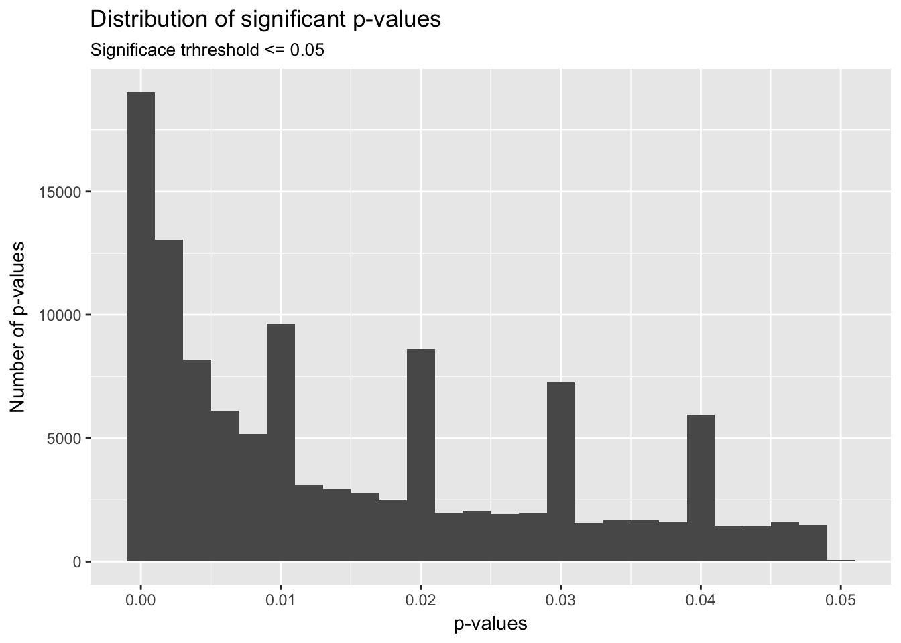
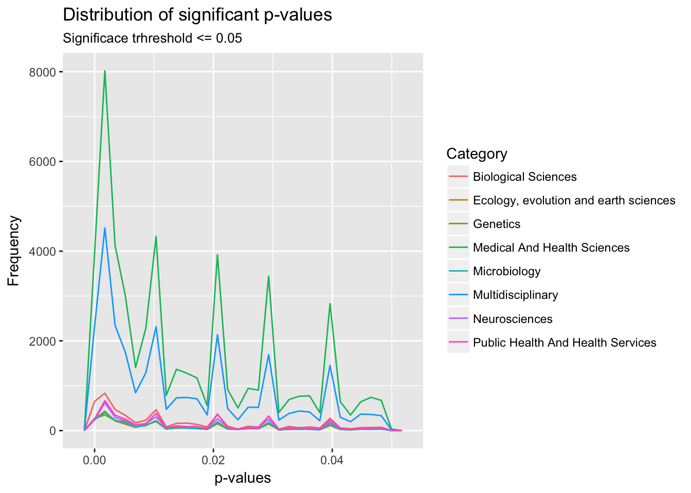
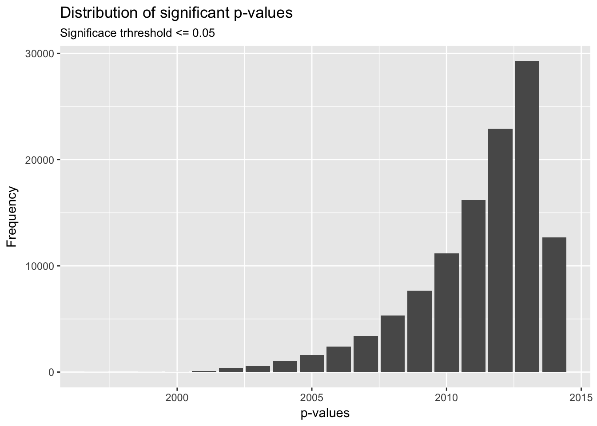
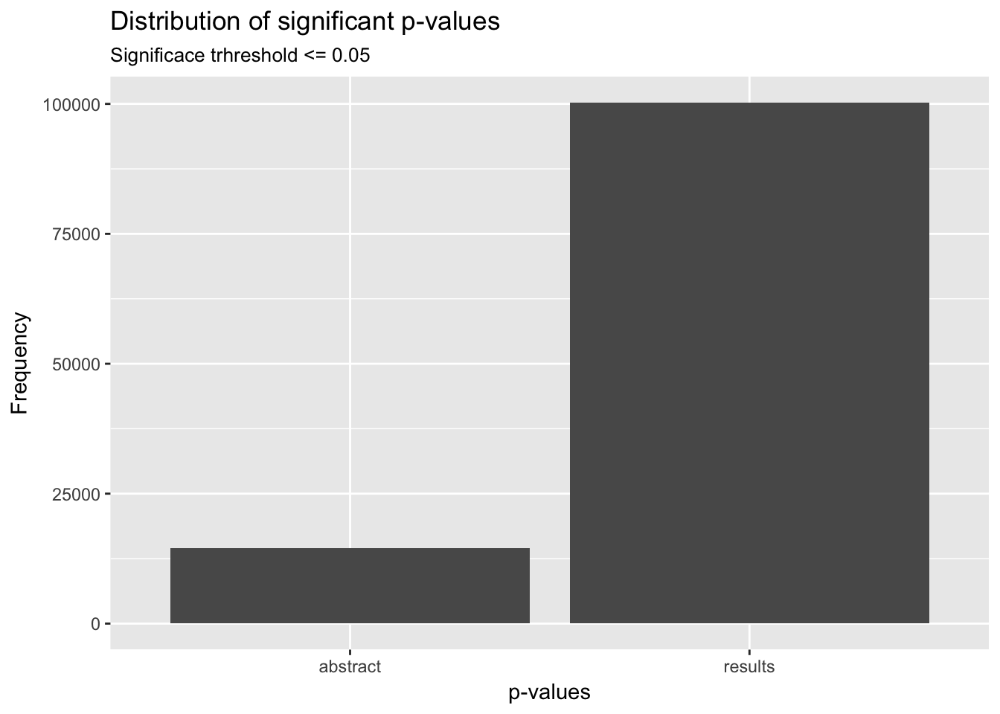
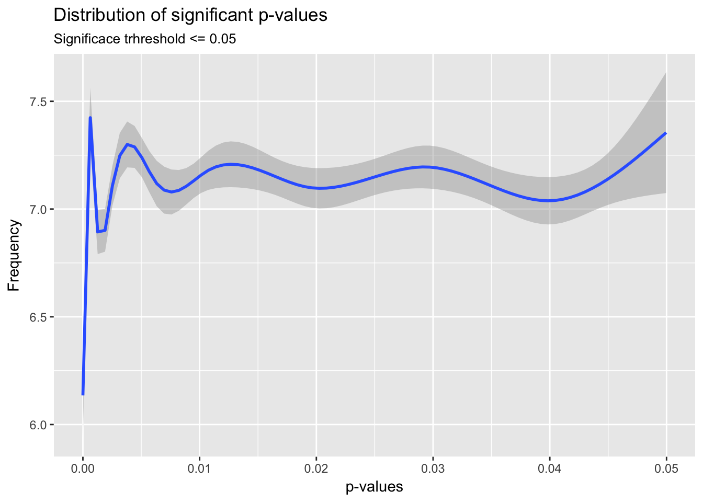

Homework 6
Camacho Jonathan
Computing for the Social Sciences
University of Chicago
Computing for the Social Sciences
University of Chicago
test
# libraries
source("./scripts/00_functions.R")# Fiting data set for analysis.
p_values_df <- read.csv("./data/processed/tidy_p_values_df_full_set.csv") %>%
filter((p.value >= 0) & (!is.na(p.value)))#Table
p_values_df %>%
count(cut_width(p.value, 0.005, boundary = 0))## # A tibble: 10 × 2
## `cut_width(p.value, 0.005, boundary = 0)` n
## <fctr> <int>
## 1 [0,0.005] 40221
## 2 (0.005,0.01] 19462
## 3 (0.01,0.015] 7535
## 4 (0.015,0.02] 12827
## 5 (0.02,0.025] 5048
## 6 (0.025,0.03] 10368
## 7 (0.03,0.035] 4039
## 8 (0.035,0.04] 8600
## 9 (0.04,0.045] 3489
## 10 (0.045,0.05] 3130# All p-values.
# Distribution of p-values with significan at p <= 0.05.
ggplot(p_values_df) +
geom_histogram(aes(p.value), binwidth = 0.002, na.rm = TRUE) +
labs(title = "Distribution of significant p-values", subtitle = "Significace trhreshold <= 0.05",
x = "p-values",
y = "Number of p-values")
ggsave("./plots/p_val_distribution.png", scale = 0.5)## Saving 3.5 x 2.5 in image# Distribution of p-values by categories.
# Subsetting more common categories.
common_cat <- p_values_df %>%
select(Category, p.value) %>%
group_by(Category) %>%
count() %>%
filter(n > 2000) %>%
select(Category)
p_values_df_common_cat <- filter(p_values_df, Category %in% common_cat$Category)
# Average p-values
common_pval_avg <- p_values_df_common_cat %>%
group_by(Category) %>%
summarise(p_val_avg = mean(p.value))
ggplot(p_values_df_common_cat) +
geom_freqpoly(aes(p.value, color = Category), bins = 30) +
labs(title = "Distribution of significant p-values", subtitle = "Significace trhreshold <= 0.05",
x = "p-values",
y = "Frequency")
ggsave("./plots/p_val_distribution.png", scale = 0.5)## Saving 3.5 x 2.5 in image# Distribution of p-values by year of publication.
# Subsetting more common categories.
common_pub_year <- p_values_df %>%
select(pub_year, p.value) %>%
group_by(pub_year) %>%
select(pub_year, p.value) %>% count()
# Average p-values
ggplot(p_values_df) +
geom_bar(aes(pub_year), bins = 30) +
labs(title= "Distribution of significant p-values", subtitle = "Significace trhreshold <= 0.05",
x = "p-values",
y = "Frequency")## Warning: Ignoring unknown parameters: bins
ggsave("./plots/p_val_distribution.png", scale = 0.5)## Saving 3.5 x 2.5 in imageggplot(p_values_df) +
geom_bar(aes(section)) +
labs(title= "Distribution of significant p-values", subtitle = "Significace trhreshold <= 0.05",
x = "p-values",
y = "Frequency")
ggsave("./plots/p_val_distribution.png", scale = 0.5)## Saving 3.5 x 2.5 in imageggplot(p_values_df_common_cat) +
geom_freqpoly(aes(p.value, color = section), bins = 30) +
labs(title = "Distribution of significant p-values", subtitle = "Significace trhreshold <= 0.05",
x = "p-values",
y = "Frequency")
ggplot(p_values_df) +
geom_smooth(aes(x = p.value, y = num_authors)) +
labs(title = "Distribution of significant p-values", subtitle = "Significace trhreshold <= 0.05",
x = "p-values",
y = "Frequency")## `geom_smooth()` using method = 'gam'
# binomial test.
results_df <- p_values_df %>%
filter((section == "results") & (p.value != "NA") & (p.value < 0.05))
abstracts_df <- p_values_df %>%
filter((section == "abstract") & (p.value != "NA") & (p.value < 0.05))
# binomial test all data.
replications <- 1
results.bias.test <- bootstrap.binomial.bias.test(results_df, replications)
abstracts.bias.test <- bootstrap.binomial.bias.test(abstracts_df, replications)
write.csv(results.bias.test, file="./data/processed/results_combined_data.csv")
write.csv(abstracts.bias.test, file="./data/processed/abstracts_combined_data.csv")